library(readr)
library(dplyr)
library(janitor)
library(ggplot2)
library(leaflet)
library(knitr)
library(tidyr)
library(plotly)Data Processing
Set-up
The following packages were installed:
Source
Data was downloaded from the 2024 Emergency Department Pivot Profile published by the California Department of Health Care Access and Information. Data was in CSV format.
ed <- read_csv("~/Library/CloudStorage/GoogleDrive-tellorin@usc.edu/.shortcut-targets-by-id/10yI1Vp2x44iBX7T-_NfWNeL7go8kwnUH/2. College - USC/1. Degree/1. Courses/Y4 Senior/Fall 2025/PM 566/PM566-Repository/Assignments/Final/data/data.csv")Preliminary EDA
Before cleaning and analysis, basic exploratory checks were performed to confirm the dataset’s structure and contents:
- Dimensions (
dim()): Verified the number of rows and columns to ensure the dataset matched expectations from the published profile. This confirmed that each hospital record was present and that the dataset contained the full set of variables. - Column names (
names()): Inspected the first ten variable names to get a sense of the schema. This helped identify long or complex names (e.g.,disp_against_medical_advice) that would later be simplified for easier coding. - Structure (
str()): Checked variable types (numeric vs. character) and lengths. This step confirmed that disposition counts, payer counts, and diagnosis counts were stored as numeric values, while facility identifiers were character strings. - Preview (
head()): Displayed the first few rows to visually confirm that the data loaded correctly and that values aligned with the expected hospitals.
These preliminary checks ensured that the dataset was complete, properly structured, and ready for cleaning. They also provided an early look at variable groupings (dispositions, payers, diagnoses, demographics), which guided the decision to collapse categories and normalize counts into proportions for cross‑hospital comparisons.
# EDA 1 & 2 ----
dim(ed)
names(ed)[1:10]
# EDA 3 & 4 ----
# structure
str(ed)
names(ed)
head(ed)Cleaning
To prepare the dataset for analysis, several cleaning steps were performed to ensure consistency, accuracy, and relevance:
- Handling missing values
- All numeric fields with missing values were replaced with
0to avoid skewing totals. - Character fields with missing values were dropped, since they indicated variables not applicable to the selected hospitals.
- All numeric fields with missing values were replaced with
- Checking for invalid entries
- Numeric variables were scanned for negative values, which would be invalid in count data. None were found.
- Variable selection
- From the full dataset, only relevant variables were retained, including:
- Facility identifiers (name, city, zip code, latitude/longitude)
- Capacity measures (licensed inpatient beds, ED treatment stations)
- Disposition categories (routine discharge, AMA, psychiatric transfer, SNF, death, etc.)
- Demographics (age groups, sex, race/ethnicity, language)
- Payer categories (Medi‑Cal, Medicare, private insurance, uninsured, other)
- Diagnosis categories (circulatory, respiratory, injury/trauma, mental health, other)
- From the full dataset, only relevant variables were retained, including:
- Standardizing variable names
- Long or complex names were simplified and converted to lowercase for easier coding (e.g.,
disp_against_medical_advice→disp_ama). - This step improved readability and consistency across the analysis.
- Long or complex names were simplified and converted to lowercase for easier coding (e.g.,
- Dropping unused variables
- Certain disposition categories not relevant to the analysis (e.g., disaster care site, rehab, CAH transfers) were removed to reduce noise.
- Creating the slim dataset (
ed_slim)- The cleaned and standardized dataset was saved as
ed_slim. - This version contained only the variables needed for comparative analysis across the three PIH Health hospitals.
- The cleaned and standardized dataset was saved as
colSums(is.na(ed))
ed_clean <- ed %>%
mutate(across(where(is.numeric), ~ ifelse(is.na(.), 0, .)))
colSums(is.na(ed_clean))
numeric_vars <- sapply(ed_clean, is.numeric)
colSums(ed_clean[, numeric_vars] < 0, na.rm = TRUE)
names(ed)
ed_slim <- ed_clean %>%
select(
lat, long, FACILITY_NAME, DBA_CITY, DBA_ZIP_CODE,
LICENSED_BED_SIZE, SENATE_DISTRICT_DESC, ASSEMBLY_DISTRICT_DESC,
MSSA_NAME, MSSA_DESIGNATION,
# Dispositions
disp_Acute_Care, disp_Against_Medical_Advice, disp_Childrens_or_Cancer,
disp_Died, disp_Home_Health_Service, disp_Not_Defined_Elsewhere,
disp_Prison_Jail, disp_Psychiatric_Care, disp_Routine, disp_SN_IC_Care,
disp_Hospice_Care, disp_Residential_Care, disp_CAH, disp_Rehab,
disp_Other, disp_Disaster_Care_Site,
# Zip categories
Zip_CA_Resident, Zip_Homeless, Zip_Out_of_State, Zip_Unknown, Zip_Foreign,
# Sex
Sex_Female, Sex_Male, Sex_Other_Unknown,
# Age
Age_0_09, Age_10_19, Age_20_29, Age_30_39, Age_40_49,
Age_50_59, Age_60_69, Age_70_79, Age_80_,
# Payer
Payer_All_Other_Payers, Payer_MediCal, Payer_Medicare,
Payer_Other_Government, Payer_Other_Unknown,
Payer_Private_Health_Insurance, Payer_Self_Pay_or_Uninsured,
# Race/Ethnicity
racegrp_aman, racegrp_asian, racegrp_black, racegrp_multirace,
racegrp_nhpi, racegrp_other, racegrp_unknown, racegrp_white,
eth_Hispanic, eth_NonHispanic, eth_Other_Unknown,
# Language
All_Other_Languages, English, Spanish,
# Diagnosis groups
dx_Circulatory, dx_Congenital, dx_Digestive, dx_Diseases_of_the_Blood,
dx_Ear, dx_Endocrine, dx_Eye, dx_Factors_Influencing_Health,
dx_Genitourinary, dx_Infectious, dx_Injury_Poisoning, dx_MentalHealth,
dx_Musculoskeletal, dx_Neoplasms, dx_Nervous_System, dx_Other_Unknown,
dx_Pregnancy_Childbirth, dx_Respiratory, dx_Skin, dx_Symptoms_Signs_NEC,
dx_Certain_Perinatal_Conditions,
# Emergency treatment stations
EMER_MED_TREAT_STATIONS)
dim(ed_slim)
names(ed_slim)
summary(ed_slim)
ed_slim <- ed_slim %>%
clean_names()
names(ed_slim)
ed_slim <- ed_slim %>%
rename(
facility = facility_name,
city = dba_city,
zip = dba_zip_code,
ipt_beds = licensed_bed_size,
disp_ama = disp_against_medical_advice,
disp_routine = disp_routine,
disp_acute = disp_acute_care,
disp_psych = disp_psychiatric_care,
disp_snf = disp_sn_ic_care,
disp_death = disp_died,
payer_medical = payer_medi_cal,
payer_medicare = payer_medicare,
payer_private = payer_private_health_insurance,
payer_uninsured = payer_self_pay_or_uninsured,
dx_injury = dx_injury_poisoning,
dx_mental = dx_mental_health,
dx_resp = dx_respiratory,
dx_cardio = dx_circulatory,
dx_sx = dx_symptoms_signs_nec,
dx_gu = dx_genitourinary,
dx_gi = dx_digestive,
dx_ortho = dx_musculoskeletal,
dx_nervous = dx_nervous_system,
dx_ob = dx_pregnancy_childbirth,
dx_nicu = dx_certain_perinatal_conditions,
ed_beds = emer_med_treat_stations)
names(ed_slim)
ed_slim <- ed_slim %>%
select(-disp_cah, -disp_rehab, -disp_disaster_care_site)
names(ed_slim)Exploratory plots & visualizations
The following plots and visualizations were generated during the EDA process. Some plots were included in the main report, while others were used purely for visualization during EDA.
Location of hospitals
# Location of hosp (map)
leaflet(data = ed_slim) %>%
addProviderTiles(providers$CartoDB.Positron) %>%
addAwesomeMarkers(
~long, ~lat,
popup = ~facility,
label = ~facility)Color coding hospitals
At this point in the EDA process, the three PIH Health hospitals were given the following colors for ease of data visualization in graphs.
hospital_colors <- c(
"PIH Health Downey Hospital" = "darkred",
"PIH Health Good Samaritan Hospital" = "dodgerblue4",
"PIH Health Whittier Hospital" = "gold3")Inpatient bed capacity
Having a visualization of licensed inpatient bed capacity across hospitals allows for general, straightforward comparison of institutional resources and highlighting differences in operational scale.
# ipt_beds per hosp
ipt_summary <- ed_slim %>%
select(facility, ipt_beds)
ggplot(ed_slim, aes(x = facility, y = ipt_beds, fill = facility)) +
geom_col() +
geom_text(aes(label = ipt_beds), vjust = -0.4, color = "black", size = 3.5) +
scale_fill_manual(values = hospital_colors) +
labs(title = "Licensed Inpatient Beds per Hospital",
x = "Hospital",
y = "Number of Licensed Inpatient Beds") +
theme_bw()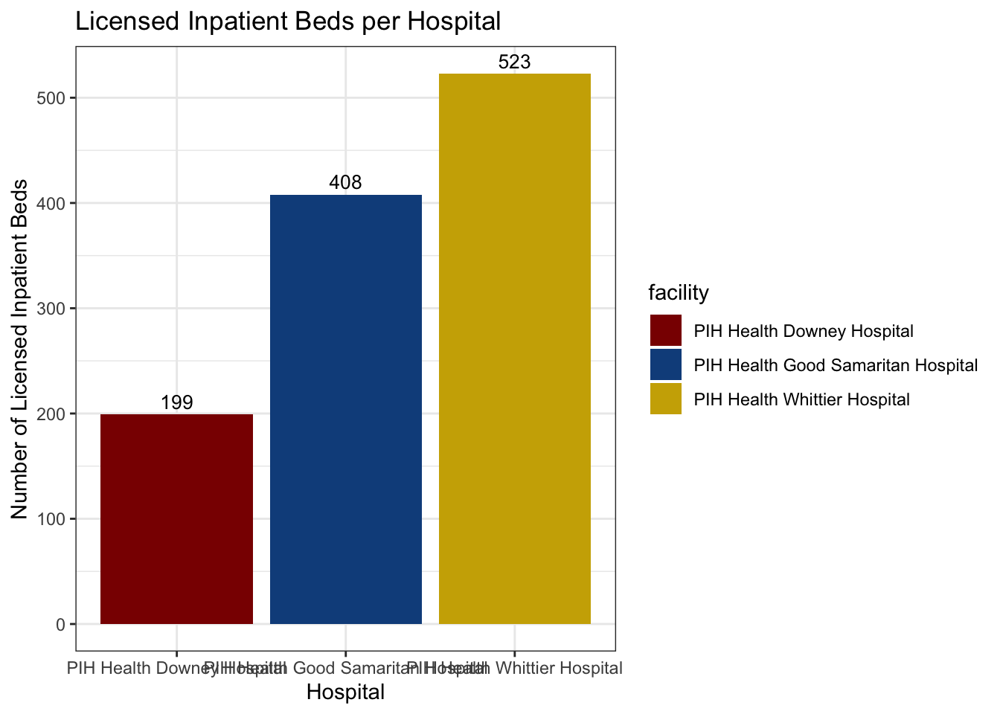
ED bed capacity
Visualizing the number of licensed ED beds across hospitals makes it easy to compare ED capacity and highlight differences in available emergency resources among facilities.
# ed_beds per hosp
ed_summary <- ed_slim %>%
select(facility, ed_beds)
ggplot(ed_slim, aes(x = facility, y = ed_beds, fill = facility)) +
geom_col() +
geom_text(aes(label = ed_beds), vjust = -0.4, color = "black", size = 3.5) +
scale_fill_manual(values = hospital_colors) +
labs(title = "Licensed ED Beds per Hospital",
x = "Hospital",
y = "Number of Licensed ED Beds") +
theme_bw()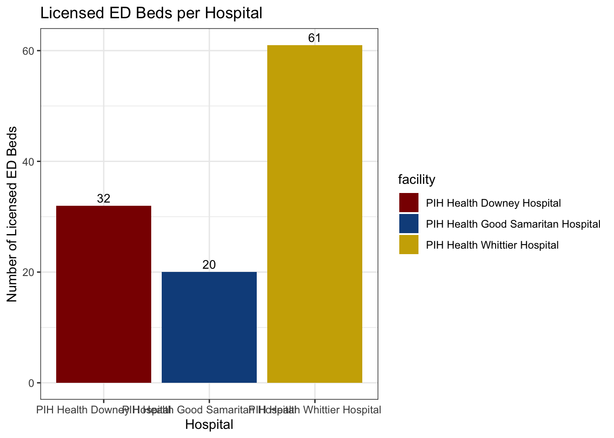
Key dispo: AMA
Visualizing the number of AMA dispositions across hospitals makes it possible to compare patient departure patterns.
# key dispo: ama
ggplot(ed_slim, aes(x = facility, y = disp_ama)) +
geom_col(fill = "dodgerblue4") +
geom_text(aes(label = disp_ama), vjust = -0.4, color = "black", size = 3.5) +
labs(title = "AMA Dispositions per Hospital",
x = "Hospital",
y = "Number of AMA Dispositions") +
theme_bw()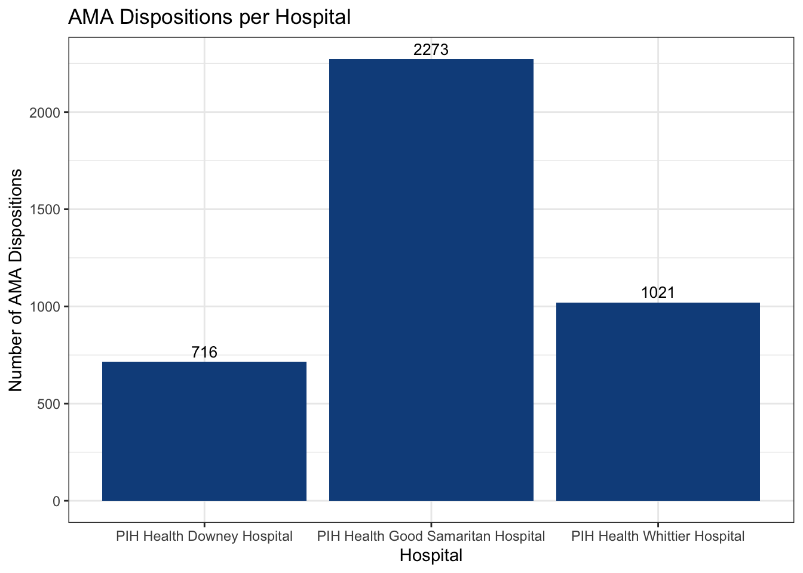
Key dispo: psych transfers
Visualizing the number of psychiatric care transfers across hospitals allows for comparison of how facilities handle patients requiring specialized psychiatric services and highlighting differences in resource allocation for mental health care, along with understanding how severe a patient’s case is to have to be transferred to a psychiatric facility for further care.
# key dispo: psych
ggplot(ed_slim, aes(x = facility, y = disp_psych)) +
geom_col(fill = "dodgerblue4") +
geom_text(aes(label = disp_psych), vjust = -0.4, color = "black", size = 3.5) +
labs(title = "Psychiatric Dispositions per Hospital",
x = "Hospital",
y = "Number of Psychiatric Dispositions") +
theme_bw()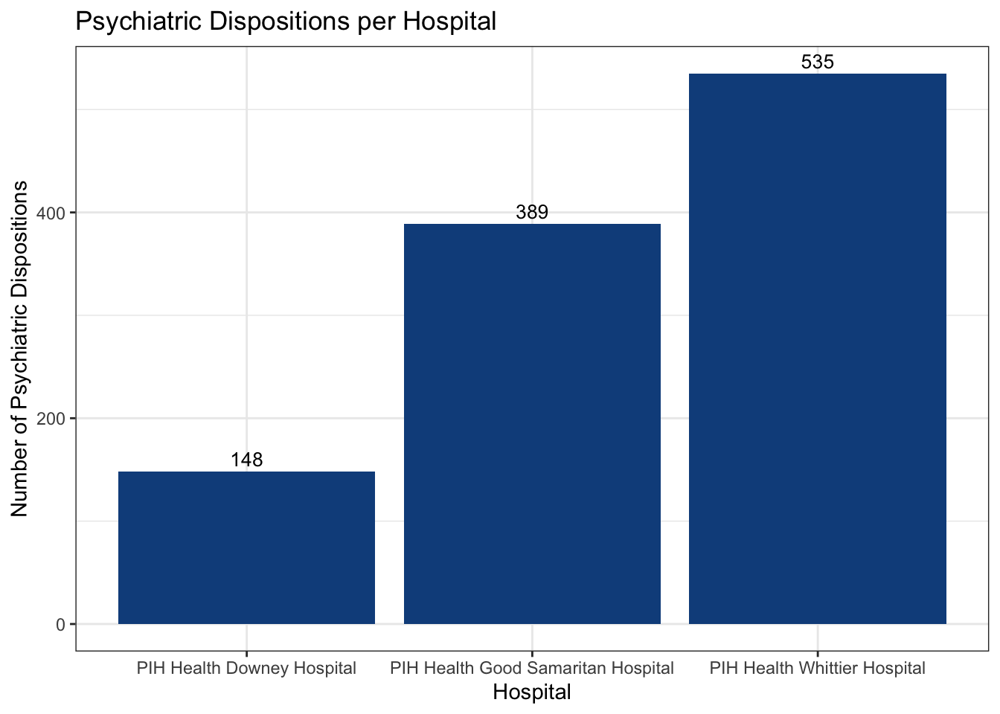
Key dispo: SNF transfers
Visualizing the number of SNF dispositions across hospitals enables comparison of post‑acute care pathways and highlights differences in how facilities transition patients to longer‑term supportive settings.
# key dispo: SNF
ggplot(ed_slim, aes(x = facility, y = disp_snf)) +
geom_col(fill = "dodgerblue4") +
geom_text(aes(label = disp_snf), vjust = -0.4, color = "black", size = 3.5) +
labs(title = "SNF Dispositions per Hospital",
x = "Hospital",
y = "Number of SNF Dispositions") +
theme_bw()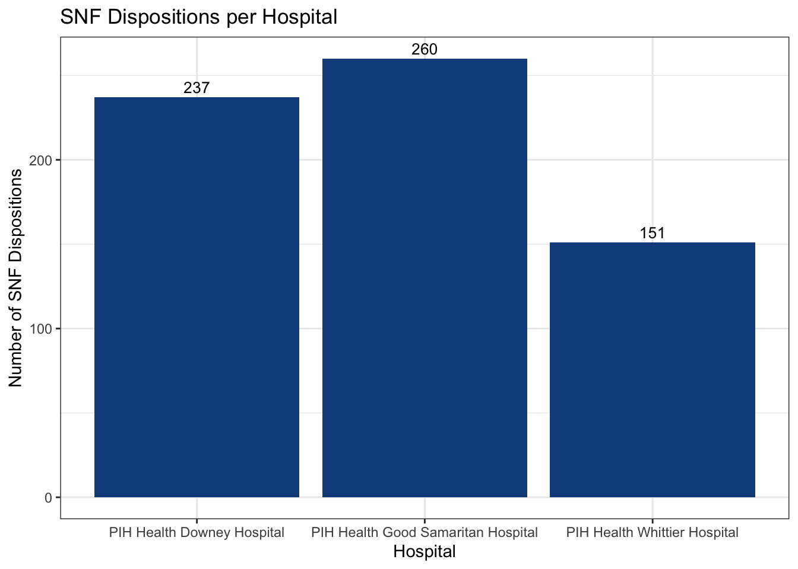
Key dispo: death
Visualizing the number of death dispositions across hospitals highlights critical outcomes in emergency care and allows for comparison of mortality patterns, underscoring differences in patient acuity and institutional capacity to manage severe cases.
# key dispo: death
ggplot(ed_slim, aes(x = facility, y = disp_death)) +
geom_col(fill = "dodgerblue4") +
geom_text(aes(label = disp_death), vjust = -0.4, color = "black", size = 3.5) +
labs(title = "Death Dispositions per Hospital",
x = "Hospital",
y = "Number of Death Dispositions") +
theme_bw()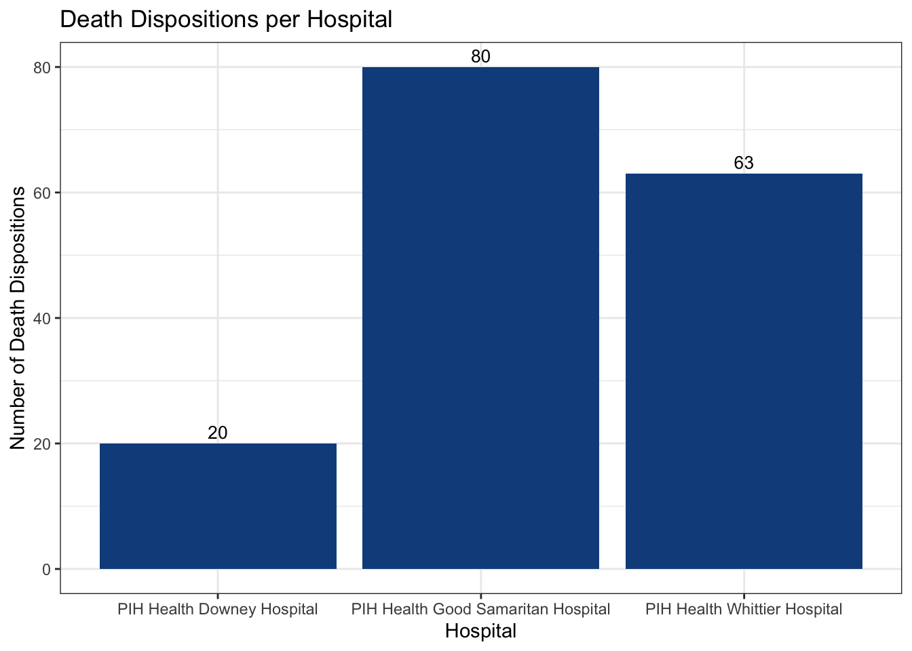
Key dispos: grouped bar chart of all key dispos
Creating a grouped bar chart of key dispositions across hospitals allows for direct comparison of AMA, psychiatric transfers, SNF transfers, and deaths in a single visualization. This combined view highlights differences in patient pathways by facility and makes it easier to identify patterns in how hospitals manage critical disposition categories.
# key dispos combo: grouped bar chart
dispo_counts <- ed_slim %>%
select(facility,
disp_ama,
disp_psych,
disp_snf,
disp_death) %>%
rename(
AMA = disp_ama,
Psych = disp_psych,
SNF = disp_snf,
Death = disp_death
) %>%
pivot_longer(cols = -facility,
names_to = "disposition",
values_to = "count")
plot_ly(dispo_counts,
x = ~disposition,
y = ~count,
color = ~facility,
colors = hospital_colors,
type = 'bar') %>%
layout(barmode = 'group',
title = "Key Dispositions per Hospital",
xaxis = list(title = "Disposition Type"),
yaxis = list(title = "Number of Dispositions"))Key dispos: summary table
Creating a summary table of key dispositions provided a concise view of overall patient flow while normalizing AMA, psychiatric transfers, SNF transfers, and deaths as rates. This tabular format makes it straightforward to compare hospitals side‑by‑side and highlight differences in disposition patterns relative to total volume.
# key dispos: summary table
disp_summary <- ed_slim %>%
mutate(total_disp = disp_acute + disp_ama + disp_childrens_or_cancer + disp_death +
disp_home_health_service + disp_not_defined_elsewhere +
disp_prison_jail + disp_psych + disp_routine + disp_snf +
disp_hospice_care + disp_residential_care + disp_other,
ama_rate = disp_ama / total_disp,
psych_rate = disp_psych / total_disp,
snf_rate = disp_snf / total_disp,
death_rate = disp_death / total_disp) %>%
select(facility, total_disp, ama_rate, psych_rate, snf_rate, death_rate)
kable(disp_summary, digits = 3,
col.names = c("Hospital", "Total Dispositions",
"AMA Rate", "Psych Rate", "SNF Rate", "Death Rate"))| Hospital | Total Dispositions | AMA Rate | Psych Rate | SNF Rate | Death Rate |
|---|---|---|---|---|---|
| PIH Health Whittier Hospital | 61112 | 0.017 | 0.009 | 0.002 | 0.001 |
| PIH Health Downey Hospital | 51758 | 0.014 | 0.003 | 0.005 | 0.000 |
| PIH Health Good Samaritan Hospital | 36557 | 0.062 | 0.011 | 0.007 | 0.002 |
Payer mix - individual: Downey, Good Sam, & Whittier,
Visualizing the payer mix for each hospital individually highlights the distribution of patients by insurance type, making it easier to compare reliance on different coverage sources and identify patterns in financial accessibility and resource allocation.
# payer mix: downey
downey_payer_counts <- ed_slim %>%
filter(facility == "PIH Health Downey Hospital") %>%
select(facility,
payer_medical,
payer_medicare,
payer_private,
payer_uninsured,
payer_all_other_payers,
payer_other_government,
payer_other_unknown) %>%
rename(
Medical = payer_medical,
Medicare = payer_medicare,
Private = payer_private,
Uninsured = payer_uninsured,
All_Other = payer_all_other_payers,
Other_Gov = payer_other_government,
Unknown = payer_other_unknown
) %>%
pivot_longer(cols = -facility,
names_to = "payer_type",
values_to = "count")
ggplot(downey_payer_counts, aes(x = payer_type, y = count)) +
geom_col(fill = "dodgerblue4") +
geom_text(aes(label = count), vjust = -0.4, color = "black", size = 3.5) +
labs(title = "Payer Mix – PIH Health Downey Hospital",
x = "Payer Type",
y = "Number of Dispositions") +
theme_bw()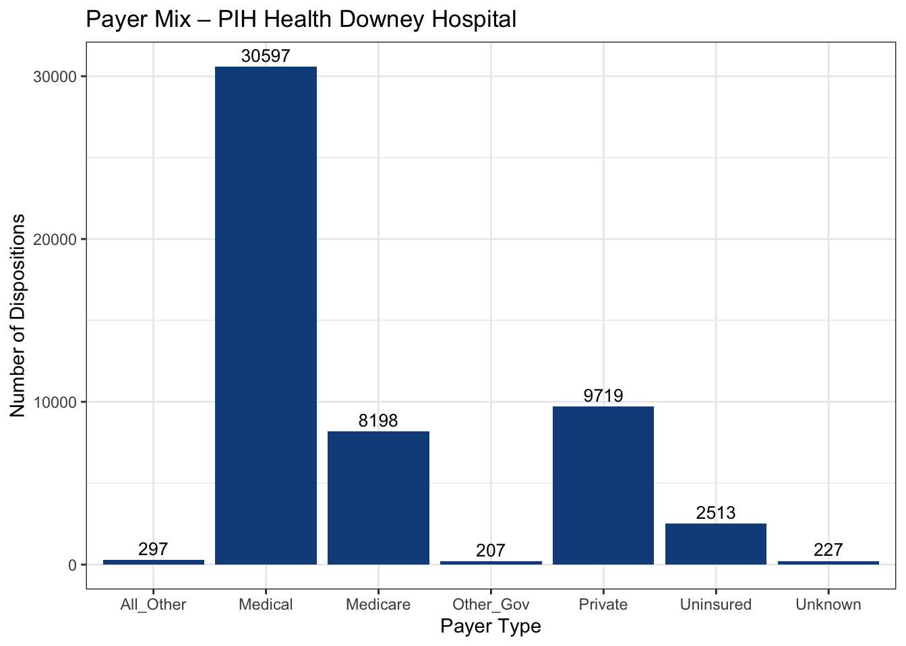
# payer mix: good sam
goodsam_payer_counts <- ed_slim %>%
filter(facility == "PIH Health Good Samaritan Hospital") %>%
select(facility,
payer_medical,
payer_medicare,
payer_private,
payer_uninsured,
payer_all_other_payers,
payer_other_government,
payer_other_unknown) %>%
rename(
Medical = payer_medical,
Medicare = payer_medicare,
Private = payer_private,
Uninsured = payer_uninsured,
All_Other = payer_all_other_payers,
Other_Gov = payer_other_government,
Unknown = payer_other_unknown
) %>%
pivot_longer(cols = -facility,
names_to = "payer_type",
values_to = "count")
ggplot(goodsam_payer_counts, aes(x = payer_type, y = count)) +
geom_col(fill = "dodgerblue4") +
geom_text(aes(label = count), vjust = -0.4, color = "black", size = 3.5) +
labs(title = "Payer Mix – PIH Health Good Samaritan Hospital",
x = "Payer Type",
y = "Number of Dispositions") +
theme_bw()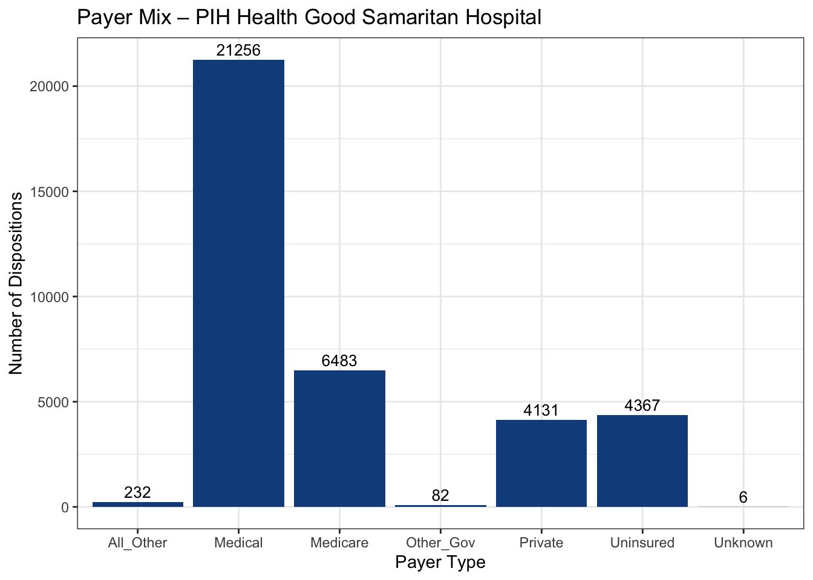
# payer mix: whittier
whittier_payer_counts <- ed_slim %>%
filter(facility == "PIH Health Whittier Hospital") %>%
select(facility,
payer_medical,
payer_medicare,
payer_private,
payer_uninsured,
payer_all_other_payers,
payer_other_government,
payer_other_unknown) %>%
rename(
Medical = payer_medical,
Medicare = payer_medicare,
Private = payer_private,
Uninsured = payer_uninsured,
All_Other = payer_all_other_payers,
Other_Gov = payer_other_government,
Unknown = payer_other_unknown
) %>%
pivot_longer(cols = -facility,
names_to = "payer_type",
values_to = "count")
ggplot(whittier_payer_counts, aes(x = payer_type, y = count)) +
geom_col(fill = "dodgerblue4") +
geom_text(aes(label = count), vjust = -0.4, color = "black", size = 3.5) +
labs(title = "Payer Mix – PIH Health Whittier Hospital",
x = "Payer Type",
y = "Number of Dispositions") +
theme_bw()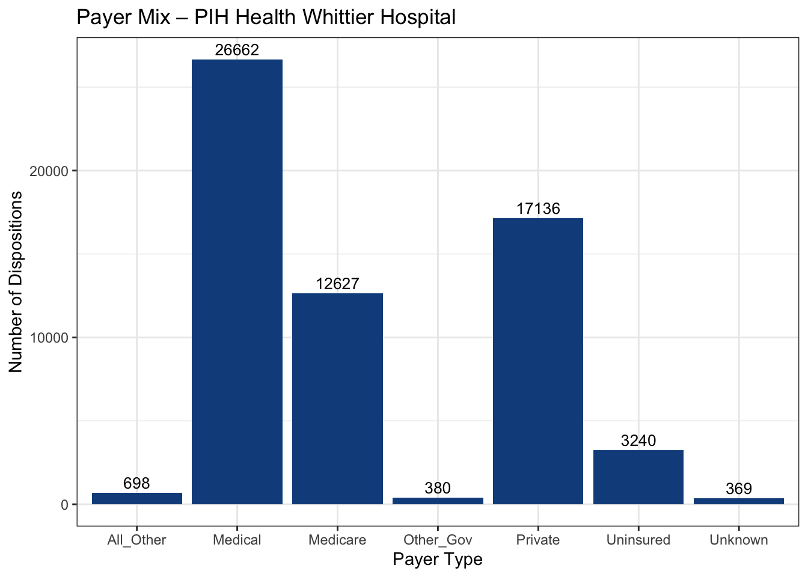
Payer mix combined: table
Creating a payer mix summary table provides a clear, structured view of how each hospital’s patient population is distributed across insurance types. Presenting the data in tabular form makes it straightforward to compare coverage sources side‑by‑side and highlight differences in financial accessibility and reliance on various payer categories.
payer_table <- ed_slim %>%
select(facility,
payer_medical,
payer_medicare,
payer_private,
payer_uninsured,
payer_all_other_payers,
payer_other_government,
payer_other_unknown) %>%
rename(
Medical = payer_medical,
Medicare = payer_medicare,
Private = payer_private,
Uninsured = payer_uninsured,
All_Other = payer_all_other_payers,
Other_Gov = payer_other_government,
Unknown = payer_other_unknown)
kable(payer_table,
col.names = c("Hospital", "Medical", "Medicare", "Private", "Uninsured",
"All Other", "Other Gov", "Unknown"),
align = c("l", rep("c", 7)))| Hospital | Medical | Medicare | Private | Uninsured | All Other | Other Gov | Unknown |
|---|---|---|---|---|---|---|---|
| PIH Health Whittier Hospital | 26662 | 12627 | 17136 | 3240 | 698 | 380 | 369 |
| PIH Health Downey Hospital | 30597 | 8198 | 9719 | 2513 | 297 | 207 | 227 |
| PIH Health Good Samaritan Hospital | 21256 | 6483 | 4131 | 4367 | 232 | 82 | 6 |
Payer mix: combined grouped bar chart
Visualizing the payer mix across all hospitals in a grouped bar chart enables direct comparison of insurance coverage distributions by facility.
# payer mix: combo grouped bar chart
payer_counts <- ed_slim %>%
select(facility,
payer_medical,
payer_medicare,
payer_private,
payer_uninsured,
payer_all_other_payers,
payer_other_government,
payer_other_unknown) %>%
rename(
Medical = payer_medical,
Medicare = payer_medicare,
Private = payer_private,
Uninsured = payer_uninsured,
All_Other = payer_all_other_payers,
Other_Gov = payer_other_government,
Unknown = payer_other_unknown
) %>%
pivot_longer(cols = -facility,
names_to = "payer_type",
values_to = "count")
plot_ly(
data = payer_counts,
x = ~payer_type,
y = ~count,
color = ~facility,
colors = hospital_colors,
type = 'bar') %>%
layout(barmode = 'group',
title = "Payer Mix – All Hospitals",
xaxis = list(title = "Payer Type", tickangle = 45),
yaxis = list(title = "Number of Dispositions"))Diagnosis (dx) category (cat) - individual: Downey, Good Sam, Whittier
Visualizing the diagnosis categories for each hospital individually highlights the distribution of patient conditions, making it easier to compare reliance on different clinical service areas and identify patterns in case mix and resource demand.
# dx cat: downey
downey_dx_counts <- ed_slim %>%
filter(facility == "PIH Health Downey Hospital") %>%
select(facility,
dx_cardio,
dx_resp,
dx_injury,
dx_mental,
dx_other_unknown) %>%
rename(
Cardio = dx_cardio,
Respiratory = dx_resp,
Injury = dx_injury,
Mental = dx_mental,
Other_Unknown = dx_other_unknown
) %>%
pivot_longer(cols = -facility,
names_to = "dx_category",
values_to = "count")
ggplot(downey_dx_counts, aes(x = dx_category, y = count)) +
geom_col(fill = "dodgerblue4") +
geom_text(aes(label = count), vjust = -0.4, color = "black", size = 3.5) +
labs(title = "Diagnosis Categories – PIH Health Downey Hospital",
x = "Diagnosis Category",
y = "Number of Dispositions") +
theme_bw()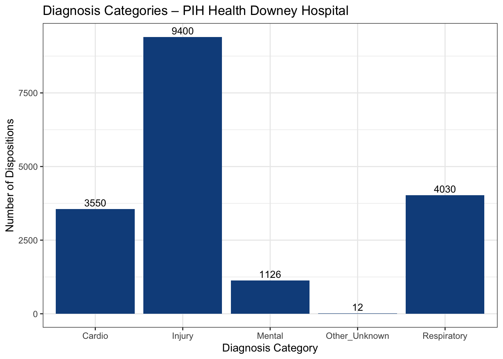
# dx cat: good sam
goodsam_dx_counts <- ed_slim %>%
filter(facility == "PIH Health Good Samaritan Hospital") %>%
select(facility,
dx_cardio,
dx_resp,
dx_injury,
dx_mental,
dx_other_unknown) %>%
rename(
Cardio = dx_cardio,
Respiratory = dx_resp,
Injury = dx_injury,
Mental = dx_mental,
Other_Unknown = dx_other_unknown
) %>%
pivot_longer(cols = -facility,
names_to = "dx_category",
values_to = "count")
ggplot(goodsam_dx_counts, aes(x = dx_category, y = count)) +
geom_col(fill = "dodgerblue4") +
geom_text(aes(label = count), vjust = -0.4, color = "black", size = 3.5) +
labs(title = "Diagnosis Categories – PIH Health Good Samaritan Hospital",
x = "Diagnosis Category",
y = "Number of Dispositions") +
theme_bw()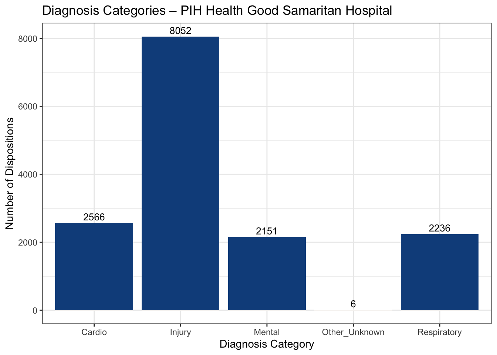
# dx cat: whittier
whittier_dx_counts <- ed_slim %>%
filter(facility == "PIH Health Whittier Hospital") %>%
select(facility,
dx_cardio,
dx_resp,
dx_injury,
dx_mental,
dx_other_unknown) %>%
rename(
Cardio = dx_cardio,
Respiratory = dx_resp,
Injury = dx_injury,
Mental = dx_mental,
Other_Unknown = dx_other_unknown
) %>%
pivot_longer(cols = -facility,
names_to = "dx_category",
values_to = "count")
ggplot(whittier_dx_counts, aes(x = dx_category, y = count)) +
geom_col(fill = "dodgerblue4") +
geom_text(aes(label = count), vjust = -0.4, color = "black", size = 3.5) +
labs(title = "Diagnosis Categories – PIH Health Whittier Hospital",
x = "Diagnosis Category",
y = "Number of Dispositions") +
theme_bw()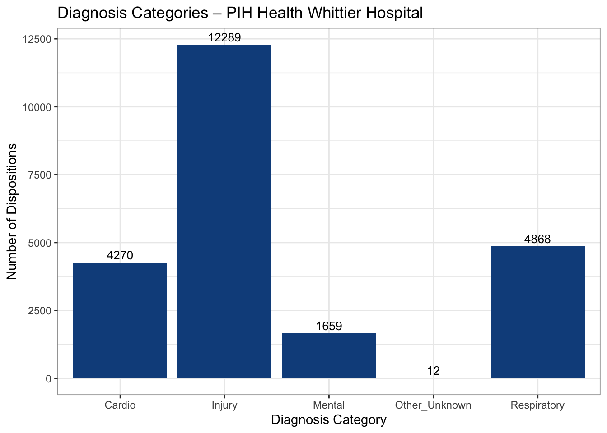
Dx cat combined: grouped bar chart
Visualizing diagnosis categories across all hospitals in a grouped bar chart enables direct comparison of patient case mixes by facility. This combined view highlights differences in clinical demand areas and makes it easier to identify patterns in how hospitals manage varying types of conditions.
# dx cat combo: grouped bar chart
dx_counts <- ed_slim %>%
select(facility,
dx_cardio,
dx_resp,
dx_injury,
dx_mental,
dx_other_unknown) %>%
rename(
Cardio = dx_cardio,
Respiratory = dx_resp,
Injury = dx_injury,
Mental = dx_mental,
Other_Unknown = dx_other_unknown
) %>%
pivot_longer(cols = -facility,
names_to = "dx_category",
values_to = "count")
plot_ly(dx_counts,
x = ~dx_category,
y = ~count,
color = ~facility,
colors = hospital_colors,
type = 'bar') %>%
layout(barmode = 'group',
title = "Diagnosis Categories – All Hospitals",
xaxis = list(title = "Diagnosis Category", tickangle = 45),
yaxis = list(title = "Number of Dispositions"))Age distribution counts
Visualizing age distribution across all hospitals in a combined line chart highlights differences in patient populations by age group. This view makes it easier to compare demographic patterns across facilities and identify variations in demand for age‑specific care.
# age distribution combo
age_counts <- ed_slim %>%
select(facility,
age_0_09,
age_10_19,
age_20_29,
age_30_39,
age_40_49,
age_50_59,
age_60_69,
age_70_79,
age_80) %>%
rename(
`0-9` = age_0_09,
`10-19` = age_10_19,
`20-29` = age_20_29,
`30-39` = age_30_39,
`40-49` = age_40_49,
`50-59` = age_50_59,
`60-69` = age_60_69,
`70-79` = age_70_79,
`80+` = age_80
) %>%
pivot_longer(cols = -facility,
names_to = "age_group",
values_to = "count")
plot_ly(age_counts,
x = ~age_group,
y = ~count,
color = ~facility,
colors = hospital_colors,
type = 'scatter',
mode = 'lines+markers',
marker = list(size = 8),
line = list(width = 3)) %>%
layout(title = "Age Distribution – All Hospitals",
xaxis = list(title = "Age Group", tickangle = 45),
yaxis = list(title = "Count"))Normalizing dispo counts
It was important to normalize the counts because hospitals vary widely in their overall patient volumes, and raw numbers alone could misrepresent differences in disposition patterns. Normalization ensures that comparisons reflect relative proportions rather than being skewed by facility size.
Counts were normalized to account for differences in overall patient volume across hospitals. By converting raw disposition counts into proportions of total dispositions, the analysis allows for fair comparison of AMA, psychiatric transfers, SNF transfers, and deaths relative to each hospital’s scale, highlighting patterns that might otherwise be obscured by size differences.
ed_slim <- ed_slim %>%
mutate(total_disp = rowSums(across(starts_with("disp_")), na.rm = TRUE))
dispo_props <- ed_slim %>%
mutate(
AMA_prop = disp_ama / total_disp,
Psych_prop = disp_psych / total_disp,
SNF_prop = disp_snf / total_disp,
Death_prop = disp_death / total_disp
) %>%
select(facility, AMA_prop, Psych_prop, SNF_prop, Death_prop)Normalize payer mix
It was necessary to normalize the payer mix because hospitals differ in their overall patient volumes, and raw counts alone could exaggerate or obscure differences in coverage sources. Normalization ensures that comparisons reflect the relative share of each payer type rather than being skewed by facility size.
By converting raw payer counts into proportions of total dispositions, the analysis allows for fair comparison of Medical, Medicare, Private, Uninsured, and other categories across hospitals. This highlights differences in financial accessibility and institutional reliance on specific coverage sources, making patterns in payer distribution clearer and more meaningful.
# normolize payer mix
payer_props <- ed_slim %>%
mutate(total_payer = payer_medical + payer_medicare + payer_private +
payer_uninsured + payer_all_other_payers +
payer_other_government + payer_other_unknown) %>%
mutate(
Medical_prop = payer_medical / total_payer,
Medicare_prop = payer_medicare / total_payer,
Private_prop = payer_private / total_payer,
Uninsured_prop = payer_uninsured / total_payer,
AllOther_prop = payer_all_other_payers / total_payer,
OtherGov_prop = payer_other_government / total_payer,
Unknown_prop = payer_other_unknown / total_payer
) %>%
select(facility, Medical_prop, Medicare_prop, Private_prop,
Uninsured_prop, AllOther_prop, OtherGov_prop, Unknown_prop)Normalizing diagnosis categories
It was necessary to normalize the diagnosis category counts because hospitals differ in their overall patient volumes, and raw numbers alone could obscure meaningful differences in case mix. Normalization ensures that comparisons reflect the relative share of each diagnosis type rather than being skewed by facility size.
By converting raw diagnosis counts into proportions of total diagnoses, the analysis allows for fair comparison of cardiovascular, respiratory, injury, mental health, and other/unknown categories across hospitals. This highlights differences in clinical demand patterns and makes case mix variation clearer and more interpretable.
# normalize dx cats
dx_props <- ed_slim %>%
mutate(total_dx = dx_cardio + dx_resp + dx_injury + dx_mental + dx_other_unknown) %>%
mutate(
Cardio_prop = dx_cardio / total_dx,
Respiratory_prop = dx_resp / total_dx,
Injury_prop = dx_injury / total_dx,
Mental_prop = dx_mental / total_dx,
Other_prop = dx_other_unknown / total_dx
) %>%
select(facility, Cardio_prop, Respiratory_prop, Injury_prop, Mental_prop, Other_prop)Normalizing age
It was necessary to normalize the age distribution because hospitals differ in their overall patient volumes, and raw counts alone could obscure meaningful demographic differences. Normalization ensures that comparisons reflect the relative share of each age group rather than being skewed by facility size.
By converting raw age counts into proportions of total patients, the analysis allows for fair comparison of pediatric, adult, and elderly populations across hospitals. This highlights demographic patterns more clearly and makes it easier to identify variations in age‑specific demand for care.
# normalize age
age_props <- ed_slim %>%
mutate(total_age = age_0_09 + age_10_19 + age_20_29 + age_30_39 +
age_40_49 + age_50_59 + age_60_69 + age_70_79 + age_80) %>%
mutate(
age_0_09_prop = age_0_09 / total_age,
age_10_19_prop = age_10_19 / total_age,
age_20_29_prop = age_20_29 / total_age,
age_30_39_prop = age_30_39 / total_age,
age_40_49_prop = age_40_49 / total_age,
age_50_59_prop = age_50_59 / total_age,
age_60_69_prop = age_60_69 / total_age,
age_70_79_prop = age_70_79 / total_age,
age_80_prop = age_80 / total_age
) %>%
select(facility, age_0_09_prop, age_10_19_prop, age_20_29_prop,
age_30_39_prop, age_40_49_prop, age_50_59_prop,
age_60_69_prop, age_70_79_prop, age_80_prop)Dispo proportions
Visualizing disposition proportions across hospitals in a grouped bar chart highlights relative differences in AMA, psychiatric transfers, SNF transfers, and deaths. By using proportions rather than raw counts, the chart allows for fair comparison across facilities of varying patient volumes and makes patterns in critical disposition categories clearer and more interpretable.
# Disposition proportions
dispo_long <- dispo_props %>%
rename(
`AMA` = AMA_prop,
`Psych Transfer` = Psych_prop,
`SNF` = SNF_prop,
`Death` = Death_prop
) %>%
pivot_longer(cols = c(`AMA`,
`Psych Transfer`,
`SNF`,
`Death`),
names_to = "disposition",
values_to = "proportion")
plot_ly(dispo_long,
x = ~disposition,
y = ~proportion,
color = ~facility,
colors = hospital_colors,
type = 'bar') %>%
layout(barmode = 'group',
title = "Disposition Proportions – All Hospitals",
xaxis = list(title = "Disposition Type", tickangle = 45),
yaxis = list(title = "Proportion of Total Dispositions"))Payer mix proportions
Visualizing payer mix proportions across hospitals in a grouped bar chart highlights the relative share of Medi‑Cal, Medicare, private insurance, uninsured, and other coverage types. Using proportions rather than raw counts allows for fair comparison across facilities of different sizes and makes patterns in financial accessibility and institutional reliance on specific payer categories clearer and more interpretable.
# payer mix prop
payer_long <- payer_props %>%
rename(
`Medi-Cal` = Medical_prop,
`Medicare` = Medicare_prop,
`Private Insurance` = Private_prop,
`Uninsured` = Uninsured_prop,
`All Other Payers` = AllOther_prop,
`Other Government` = OtherGov_prop,
`Unknown` = Unknown_prop
) %>%
pivot_longer(cols = c(`Medi-Cal`, `Medicare`, `Private Insurance`,
`Uninsured`, `All Other Payers`,
`Other Government`, `Unknown`),
names_to = "payer_type",
values_to = "proportion")
plot_ly(payer_long,
x = ~payer_type,
y = ~proportion,
color = ~facility,
colors = hospital_colors,
type = 'bar') %>%
layout(barmode = 'group',
title = "Payer Mix Proportions – All Hospitals",
xaxis = list(title = "Payer Type", tickangle = 45),
yaxis = list(title = "Proportion of Total Payer Mix"))Dx cat proportions
Visualizing diagnosis category proportions across hospitals in a grouped bar chart highlights the relative distribution of cardiovascular, respiratory, injury/trauma, mental health, and other/unknown cases. By using proportions instead of raw counts, the chart allows for fair comparison across facilities of different sizes and makes variation in case mix clearer and more interpretable.
# dx cat prop
dx_long <- dx_props %>%
rename(
`Cardiovascular` = Cardio_prop,
`Respiratory` = Respiratory_prop,
`Injury/Trauma` = Injury_prop,
`Mental Health` = Mental_prop,
`Other/Unknown` = Other_prop
) %>%
pivot_longer(cols = c(`Cardiovascular`, `Respiratory`,
`Injury/Trauma`, `Mental Health`,
`Other/Unknown`),
names_to = "dx_category",
values_to = "proportion")
plot_ly(dx_long,
x = ~dx_category,
y = ~proportion,
color = ~facility,
colors = hospital_colors,
type = 'bar') %>%
layout(barmode = 'group',
title = "Diagnosis Category Proportions – All Hospitals",
xaxis = list(title = "Diagnosis Category", tickangle = 45),
yaxis = list(title = "Proportion of Total Diagnoses"))Age distribution proportions
Visualizing age distribution proportions across hospitals in a combined line chart highlights the relative share of patients in each age group. By using proportions instead of raw counts, the chart allows for fair comparison across facilities of different sizes and makes demographic patterns clearer—showing how pediatric, adult, and elderly populations vary in their representation across hospitals. This approach helps identify differences in age‑specific demand for care and resource allocation.
# USING age distribition prop
age_long <- age_props %>%
rename(
`0–9 years` = age_0_09_prop,
`10–19 years` = age_10_19_prop,
`20–29 years` = age_20_29_prop,
`30–39 years` = age_30_39_prop,
`40–49 years` = age_40_49_prop,
`50–59 years` = age_50_59_prop,
`60–69 years` = age_60_69_prop,
`70–79 years` = age_70_79_prop,
`80+ years` = age_80_prop
) %>%
pivot_longer(cols = c(`0–9 years`, `10–19 years`, `20–29 years`,
`30–39 years`, `40–49 years`, `50–59 years`,
`60–69 years`, `70–79 years`, `80+ years`),
names_to = "age_group",
values_to = "proportion")
plot_ly(age_long,
x = ~age_group,
y = ~proportion,
color = ~facility,
colors = hospital_colors,
type = 'scatter',
mode = 'lines+markers',
line = list(width = 3)) %>%
layout(title = "Age Distribution Proportions – All Hospitals",
xaxis = list(title = "Age Group", tickangle = 45),
yaxis = list(title = "Proportion of Total Patients"))